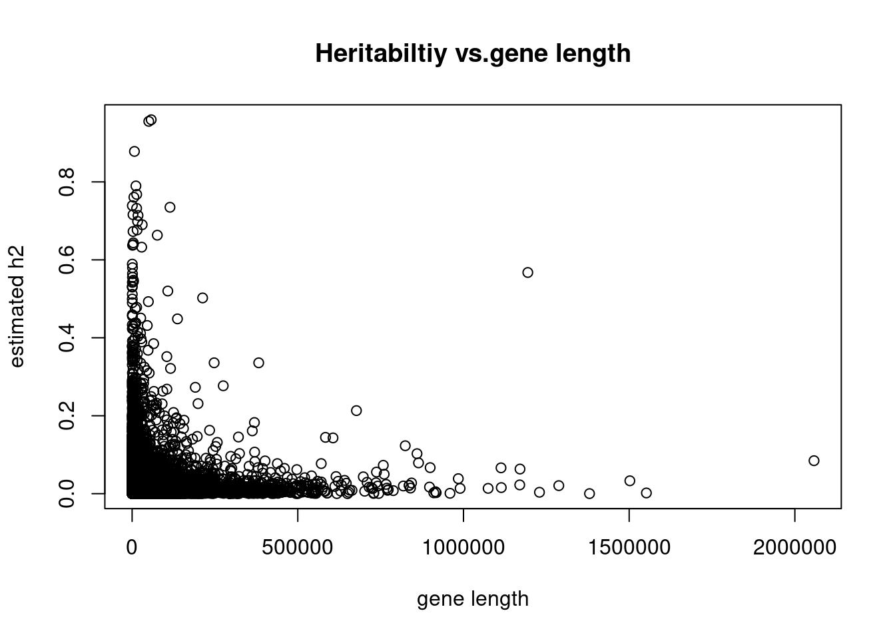

results
Last updated: 2020-07-13
Checks: 7 0
Knit directory: partition_heritability/
This reproducible R Markdown analysis was created with workflowr (version 1.6.0). The Checks tab describes the reproducibility checks that were applied when the results were created. The Past versions tab lists the development history.
Great! Since the R Markdown file has been committed to the Git repository, you know the exact version of the code that produced these results.
Great job! The global environment was empty. Objects defined in the global environment can affect the analysis in your R Markdown file in unknown ways. For reproduciblity it’s best to always run the code in an empty environment.
The command set.seed(20200622) was run prior to running the code in the R Markdown file. Setting a seed ensures that any results that rely on randomness, e.g. subsampling or permutations, are reproducible.
Great job! Recording the operating system, R version, and package versions is critical for reproducibility.
Nice! There were no cached chunks for this analysis, so you can be confident that you successfully produced the results during this run.
Great job! Using relative paths to the files within your workflowr project makes it easier to run your code on other machines.
Great! You are using Git for version control. Tracking code development and connecting the code version to the results is critical for reproducibility. The version displayed above was the version of the Git repository at the time these results were generated.
Note that you need to be careful to ensure that all relevant files for the analysis have been committed to Git prior to generating the results (you can use wflow_publish or wflow_git_commit). workflowr only checks the R Markdown file, but you know if there are other scripts or data files that it depends on. Below is the status of the Git repository when the results were generated:
Ignored files:
Ignored: .ipynb_checkpoints/
Untracked files:
Untracked: README.html
Untracked: analysis/.ipynb_checkpoints/
Untracked: output/total_h2_for_each_gene_chr22.txt
Note that any generated files, e.g. HTML, png, CSS, etc., are not included in this status report because it is ok for generated content to have uncommitted changes.
These are the previous versions of the R Markdown and HTML files. If you’ve configured a remote Git repository (see ?wflow_git_remote), click on the hyperlinks in the table below to view them.
| File | Version | Author | Date | Message |
|---|---|---|---|---|
| Rmd | 549e1b3 | Jing Gu | 2020-07-13 | run analysis over chr21 and chr22 |
| html | 6681a1f | Jing Gu | 2020-07-09 | Build site. |
| html | 9df76c1 | Jing Gu | 2020-07-09 | Build site. |
| Rmd | b8ec4db | Jing Gu | 2020-07-09 | wflow_publish(“analysis/*“) |
[1] "44.1% of genes from chr21 show non-postive heritability."[1] "47.5% of genes from chr22 show non-postive heritability."`stat_bin()` using `bins = 30`. Pick better value with `binwidth`.
`stat_bin()` using `bins = 30`. Pick better value with `binwidth`. ### Correlation between cis-SNPs’ heritatblities with gene characteristics
### Correlation between cis-SNPs’ heritatblities with gene characteristics
1. gene length (overall)
gene_info<-read.table(paste0(ref_dir, "/gene_coordinates_info.txt"),
header = T, stringsAsFactors = F)
gene_info[, "length"]<-gene_info$end - gene_info$start
chr21_index<-unlist(lapply(chr21$gene, function(i){which(gene_info$gene_name == i)}))
chr22_index<-unlist(lapply(chr22$gene, function(i){which(gene_info$gene_name == i)}))
par(mfrow = c(1, 2))
plot(gene_info[chr21_index, "length"], chr21$total_h2, xlab = "gene length", ylab = "total h2",
main = "Chr21: heritabiltiy vs.gene length")
plot(gene_info[chr22_index, "length"], chr22$total_h2, xlab = "gene length", ylab = "total h2",
main = "Chr22: heritability vs. gene length")
cor(gene_info[chr21_index, "length"], chr21$total_h2)[1] -0.1155015cor(gene_info[chr22_index, "length"], chr22$total_h2)[1] -0.09209148- gene length by bins
Note:
- genes with very high cis-heritability (>200) are excluded in the boxplots
- equal number of genes in each bin
chr21_cp<-chr21
chr22_cp<-chr22
#remove two data points that have extremely large h2 values
chr21<-chr21[chr21$total_h2<200,]
chr22<-chr22[chr22$total_h2<200,]
chr21_index<-unlist(lapply(chr21$gene, function(i){which(gene_info$gene_name == i)}))
chr22_index<-unlist(lapply(chr22$gene, function(i){which(gene_info$gene_name == i)}))
chr21[, "bin"]<-cut_number(gene_info[chr21_index, "length"], n = 10)
chr22[, "bin"]<-cut_number(gene_info[chr22_index, "length"], n = 10)
ggplot(chr21, aes(x=bin, y=total_h2) ) +
geom_boxplot(fill="#69b3a2") +
xlab("Gene length by bins") +
theme(axis.text.x = element_text(angle = 90)) +
ggtitle("Chromosome 21")
ggplot(chr22, aes(x=bin, y=total_h2) ) +
geom_boxplot(fill="#69b3a2") +
xlab("Gene length by bins") +
theme(axis.text.x = element_text(angle = 90)) +
ggtitle("Chromosome 22") 3. Convervation scores and number of enhancers
3. Convervation scores and number of enhancers

| Version | Author | Date |
|---|---|---|
| 9df76c1 | Jing Gu | 2020-07-09 |
get_columns<-function(colname){
cols<-lapply(gene_list$V1, function(i){
f<-read.table(paste0(output_dir, i), header = T)
return(f[, colname])
})
output<-do.call(cbind, cols)
return(data.frame(f$Category, output))
}#count number of reference SNPs in Category C
annotations<-read.table("/project2/xuanyao/jing/reference/baseline/baseline.21.annot.gz", header = T)
counts<-unlist(apply(annotations[, 5:length(names(annotations))], 2, sum))summarize results across genes
Chromosome 21
- average per SNP heritability for category Cc across all genes
chr21_tau<-get_columns("Coefficient")
chr21_avg_tau<-apply(chr21_tau[, -1], 1, sum)
hist(chr21_avg_tau, main = "Average Tau_C across all genes")
| Version | Author | Date |
|---|---|---|
| 9df76c1 | Jing Gu | 2020-07-09 |
names(chr21_avg_tau)<-chr21_tau$f.Category- total Heritability estimates
total_h2<-sum(counts*chr21_avg_tau)
total_h2[1] 9.211415Chromosome 22
#count number of reference SNPs in Category C
annotations<-read.table("/project2/xuanyao/jing/reference/baseline/baseline.22.annot.gz", header = T)
counts<-unlist(apply(annotations[, 5:length(names(annotations))], 2, sum))- average per SNP heritability for category Cc across all genes
chr22_tau<-get_columns("Coefficient")
chr22_avg_tau<-apply(chr22_tau[, -1], 1, sum)
hist(chr22_avg_tau, main = "Average Tau_C across all genes")
names(chr22_avg_tau)<-chr22_tau$f.Category
head(chr22_avg_tau) base_0 Coding_UCSC_0
0.0009627495 0.0028316218
Coding_UCSC.extend.500_0 Conserved_LindbladToh_0
0.0020304685 -0.0094602108
Conserved_LindbladToh.extend.500_0 CTCF_Hoffman_0
0.0013429868 -0.0041867262 - total Heritability estimates
total_h2<-sum(counts*chr22_avg_tau)
total_h2[1] 123.9726Note that the echo = FALSE parameter was added to the code chunk to prevent printing of the R code that generated the plot.
sessionInfo()R version 3.5.1 (2018-07-02)
Platform: x86_64-pc-linux-gnu (64-bit)
Running under: Scientific Linux 7.4 (Nitrogen)
Matrix products: default
BLAS/LAPACK: /software/openblas-0.2.19-el7-x86_64/lib/libopenblas_haswellp-r0.2.19.so
locale:
[1] LC_CTYPE=en_US.UTF-8 LC_NUMERIC=C
[3] LC_TIME=en_US.UTF-8 LC_COLLATE=en_US.UTF-8
[5] LC_MONETARY=en_US.UTF-8 LC_MESSAGES=en_US.UTF-8
[7] LC_PAPER=en_US.UTF-8 LC_NAME=C
[9] LC_ADDRESS=C LC_TELEPHONE=C
[11] LC_MEASUREMENT=en_US.UTF-8 LC_IDENTIFICATION=C
attached base packages:
[1] stats graphics grDevices utils datasets methods base
other attached packages:
[1] ggplot2_3.1.1
loaded via a namespace (and not attached):
[1] Rcpp_1.0.4.6 compiler_3.5.1 pillar_1.3.1 later_0.7.5
[5] git2r_0.26.1 plyr_1.8.4 workflowr_1.6.0 tools_3.5.1
[9] digest_0.6.18 evaluate_0.12 tibble_2.1.1 gtable_0.2.0
[13] pkgconfig_2.0.2 rlang_0.4.0 yaml_2.2.0 withr_2.1.2
[17] stringr_1.3.1 dplyr_0.8.0.1 knitr_1.20 fs_1.3.1
[21] rprojroot_1.3-2 grid_3.5.1 tidyselect_0.2.5 glue_1.3.0
[25] R6_2.3.0 rmarkdown_1.10 purrr_0.3.2 magrittr_1.5
[29] whisker_0.3-2 backports_1.1.2 scales_1.0.0 promises_1.0.1
[33] htmltools_0.3.6 assertthat_0.2.0 colorspace_1.3-2 httpuv_1.4.5
[37] labeling_0.3 stringi_1.2.4 lazyeval_0.2.1 munsell_0.5.0
[41] crayon_1.3.4